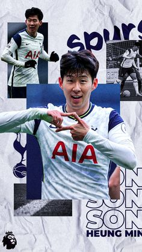

นักเตะชาวเกาหลีใต้
นักเตะวัย 29 ปีรายนี้เสริมความแข็งแกร่งให้กับคดีของเขาด้วยการเป็นผู้เล่นเอเชียคนแรกที่คว้ารางวัลรองเท้าทองคำในประวัติศาสตร์พรีเมียร์ลีก
Son คว้าสองประตูในชัยชนะ 5-0 เหนือนอริชซิตี้ที่ Carrow Road ในเมืองนอริชประเทศอังกฤษเมื่อวันอาทิตย์ที่ผ่านมา (เวลาท้องถิ่น) จบฤดูกาลด้วย 23 ประตู
ซอนและโมฮาเหม็ด ซาลาห์ แห่งลิเวอร์พูล ได้แบ่งปันรองเท้าทองคำในฐานะผู้นำร่วมในการทำประตูในการแข่งขันระดับท็อปของอังกฤษสำหรับฤดูกาล 2021-2022
